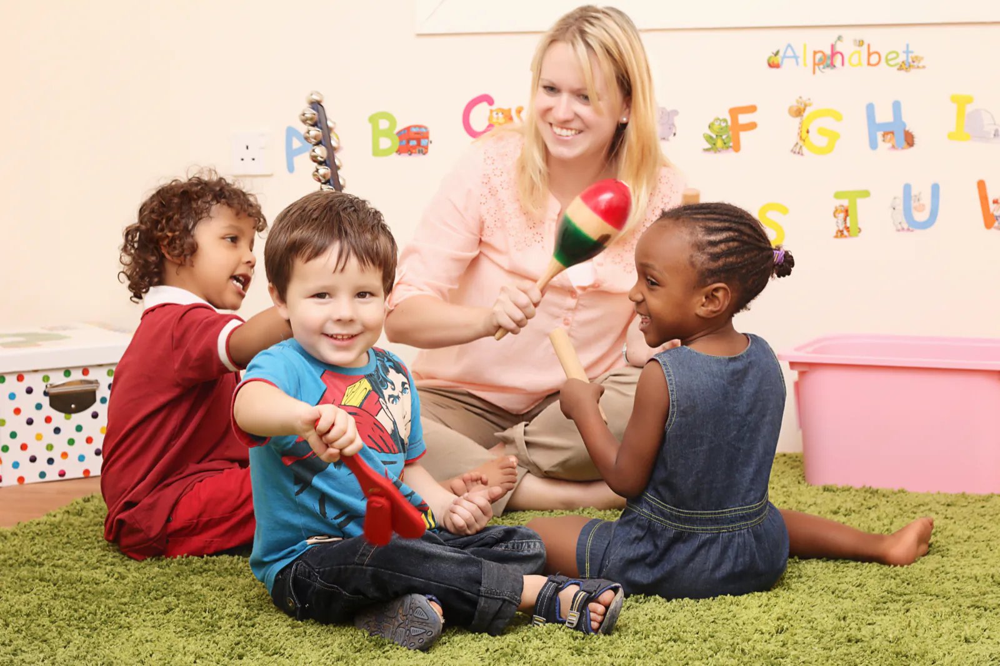
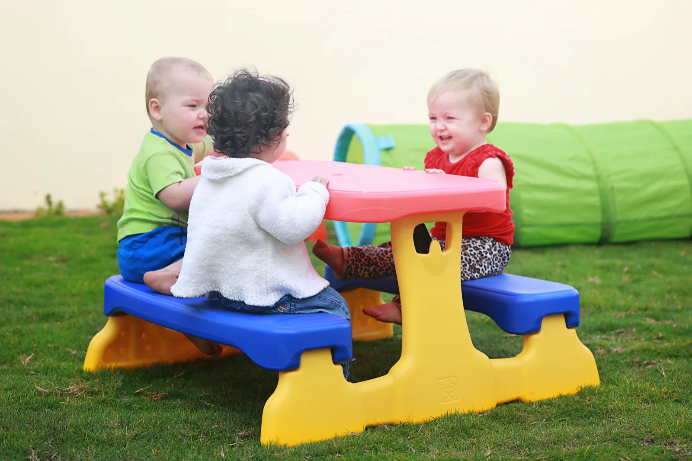
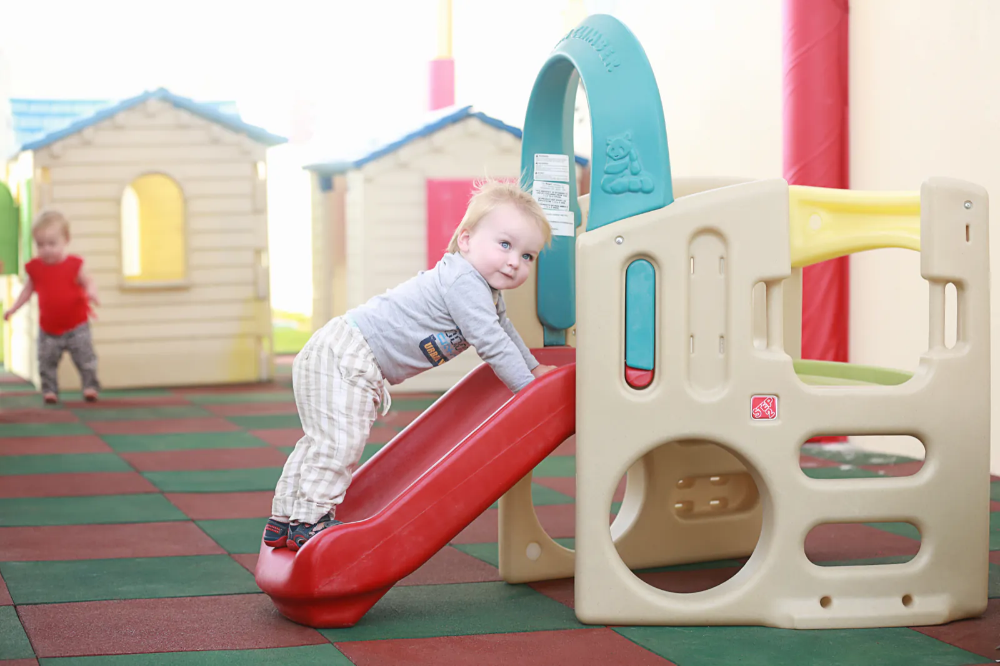
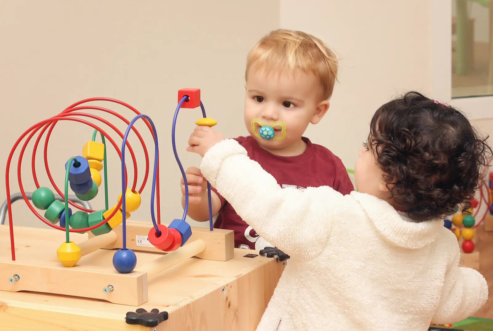
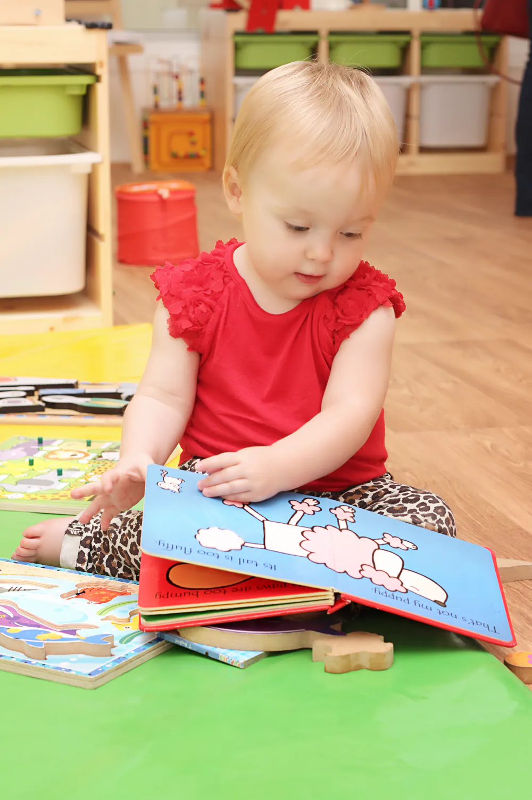
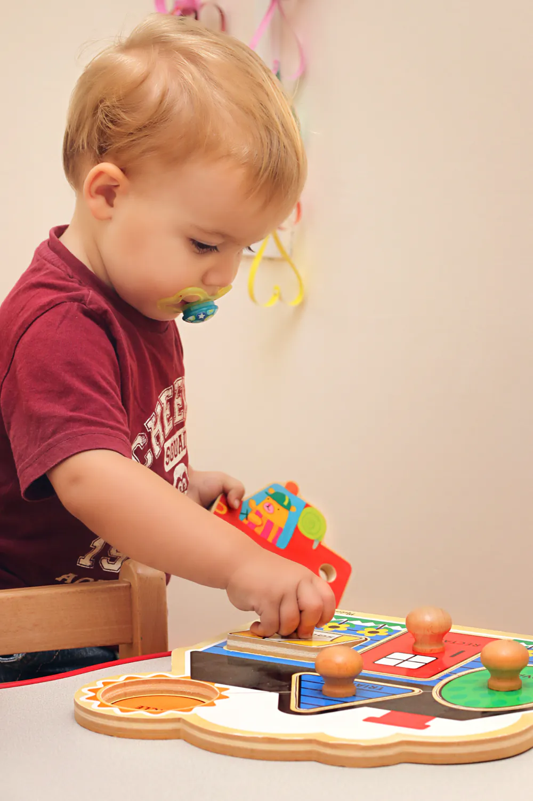
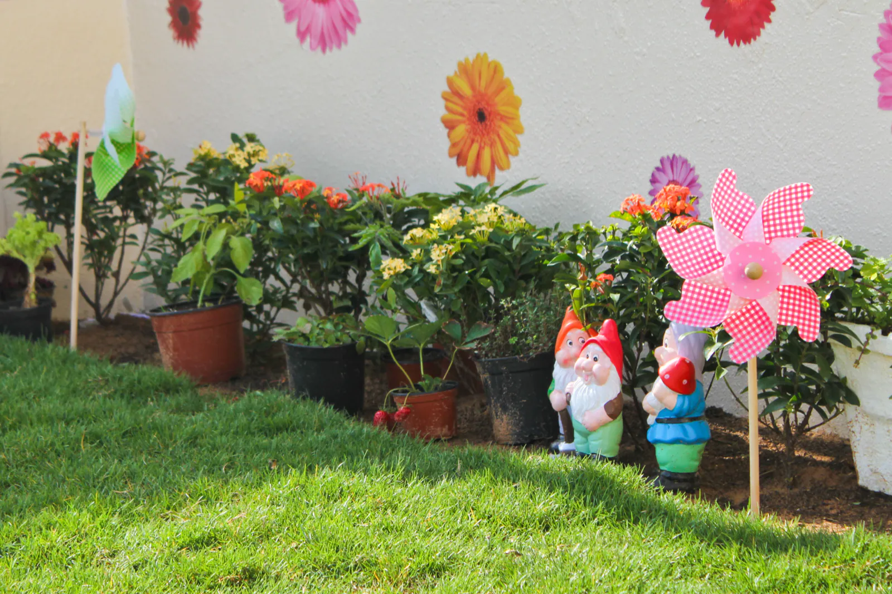
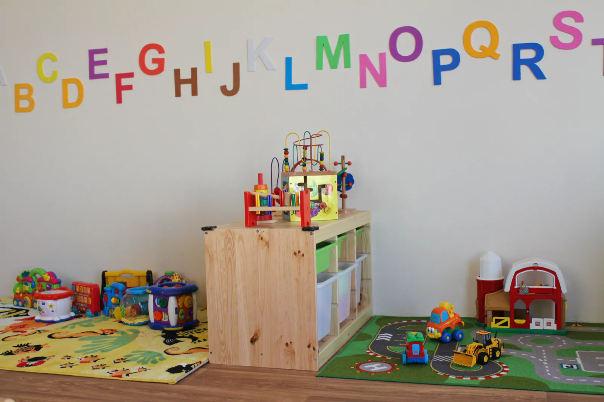

Our approach
We teach the British Early Years Foundation Stage, the framework that sets the standards for learning, development and care of children from birth to 5.
Four principles
- 01Every child is a unique child.
- 02Children grow strong and independent through positive relationships.
- 03Children learn in enabling environments.
- 04Children develop and learn in different ways, and at different rates.
For young children, when they play, it is their work.
Through play, children make sense of the world around them, understand themselves better and form relationships with others.

Seven areas of learning
The first three are the prime areas: they spark children's curiosity and enthusiasm for learning. The other four, the specific areas, build on them.
PrimePersonal, social and emotionalBelonging, respect, independence
Children work alone and in small and large groups, in a safe, reassuring place. They learn to feed themselves, manage their own toileting and get resources by themselves. Role play matters here: a house, an optician's, a doctor's surgery.

PrimePhysical developmentMoving with confidence, using tools
Fine motor control in the classroom; big movements mostly outdoors, with small and large equipment and tools used with growing control.

PrimeCommunication and languageOur first priority
Children share thoughts, ideas and feelings, with action songs, rhymes and role play. Once they're comfortable listening, understanding and speaking, they move on to reading and writing.

SpecificLiteracyPhonics, pencil control, a love of books
We introduce phonics and plan lots of chances to build pencil control and early writing, so children grow confident writing on their own.

SpecificMathematicsCounting, sorting, shapes, measuring
Practical games in every corner of the classroom: numbers, counting, sorting, and the words to compare numbers, describe shapes and measure.

SpecificUnderstanding the worldFrom babies to now, animals to seasons
Our topics lead the way: how we've changed since we were babies, construction kits, designing with reclaimed materials, the animals we see and the seasons.

SpecificExpressive arts and designMusic, dance, art, small world play
Art, collage and malleable materials are always out. Children experiment with colour, texture and sound, and build up a set of songs in music lessons with a specialist teacher.

Learning Journeys
Each child has a Learning Journey: observations, photos, artwork and mark making that build a picture of how they're growing and how they learn best. Teachers use it to plan what comes next.
At the end of each term we write a summary across all the EYFS areas, with an optional parent and teacher meeting, plus informal chats and emails along the way.
When you register, you fill in a short questionnaire about your child, and an initial assessment in the first weeks starts their Journey.
For parents
The important bits from the Red Bus Parent Handbook. You get the full handbook when you register.
Settling in
Starting nursery can unsettle children and parents alike. First we meet you one to one to talk about your child. Then we use staggered entry: children join in small groups for about an hour, to explore the room and meet their teacher.
What to pack
Label everything with your child's name.
- Water bottle
- Meals and snacks
- Spare clothes
- Spare underwear, if potty training
- Sun cream
- Sun hat
- Nappies, wipes, cream, if needed
- Formula, if your child has it
A nut-free nursery
Please don't send anything with nuts or traces of nuts; some children have allergies. We also ask you to leave out sweets, chocolate, sugary food, fizzy drinks and anything with caffeine. We teach healthy eating, and looking after ourselves, like brushing teeth.
Class blogs
We keep things as paperless as we can. Each class has a private blog, not searchable on Google, showing what the children have been doing. You get the address when you register.